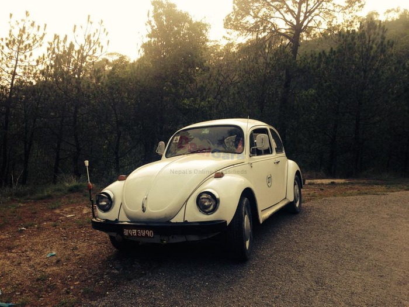

MOTOR NEPAL
MOTOR NEPAL
Automobile Industry of NepalThe automobile industry comprises a wide range of companies and organizations involved in the design, development, manufacturing, marketing, and selling of motor vehicles. Looking back at the history of vehicles in Nepal, the first car in Nepal was driven by tht Britain's prince Edward Rode across the chitwan hunting reserves. After that the Rana's got passionate about the cars and hence the automobile industry in Nepal started back then at 1922 AD. From then to now a lot of companies have been involved for the development of automobile industry in Nepal. NADA(Nepal Automobile Dealer Association) was established with a mission and vision to facilate automobile sector and support national economy through revenue and service sector. A lot of different distributor of cars and bikes have been established till date that imports vehicles from various countries and provide further service in the field. Even though no design,manufacturing or production of any vehicle is done here in Nepal, it has significantly moved forward in the field of automobile. Not even a single parts of any vehicle is manufactured here in Nepal, each and every thing is imported from various countries. People of Nepal sure are enthusiastic about vehicles because in todays date automobile market is taken up by storm. Tata motors and Suzuki motors are the dominant players in Nepal's automobile industry (both passanger and commercial vehicles). Along with these there are companies like Mahindra, Hyundai, Toyota, Ford, Volkswagen and many more are equally competing to get ahead in the field of Nepal's automobile industry. Nepal's automobile industry is gradually moving forward. In the future certain production plants and manufacturing of parts may also start, atleast we can hope so. |